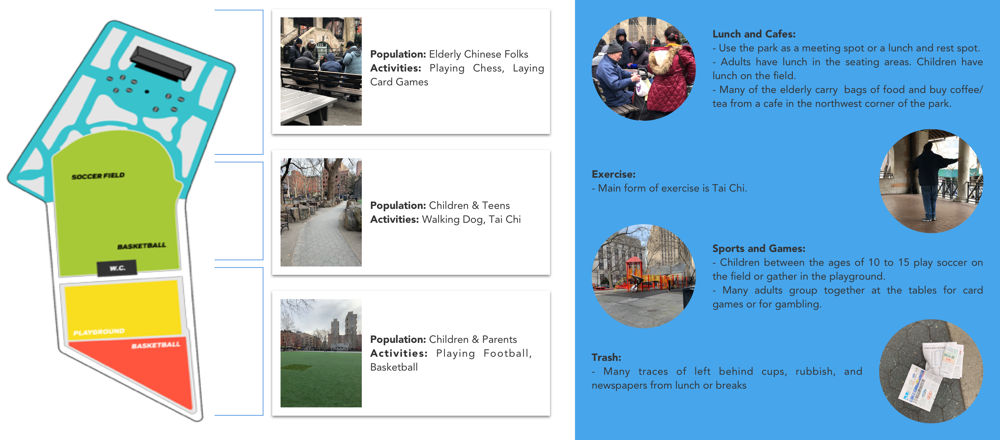
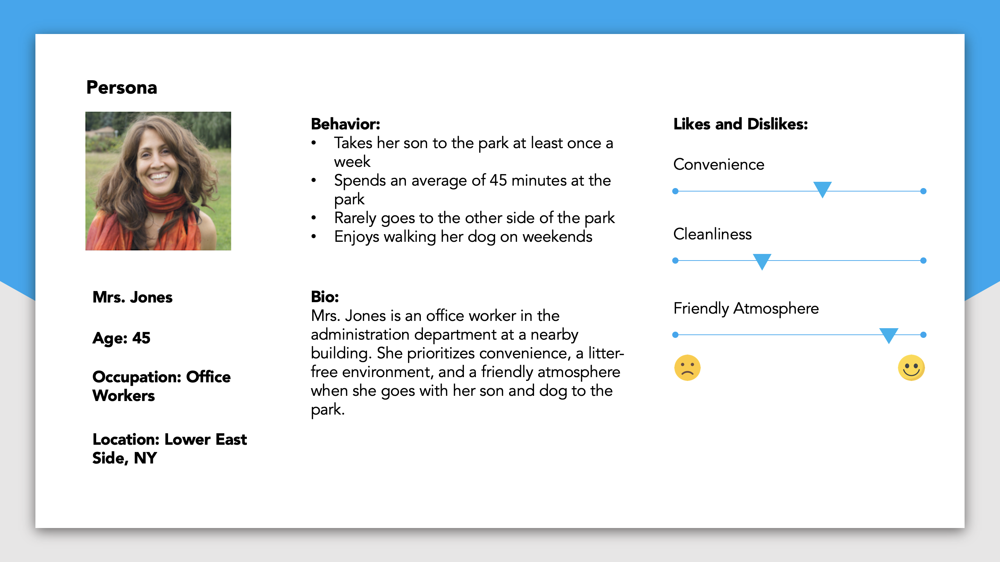

Chai Ti
Product Design / Hardware Interaction Design
New York
Jan. 2019 - Feb. 2019
"A Coffee/Tea dispensing machine that requires Tai Chi moves or trash collecting behaviors as currency. Propose a temporary design intervention that breaks cultural barriers within the space and promotes interaction and healthy activities in Columbus Park during the winter months."
COLUMBUS PARK
A public park in Chinatown
The most dangerous ghetto area of immigrant NY
“Gangs of New York”
A gathering place for the local Chinese community

MAPPING (POPULATION & ACTIVITIES)
Based on the different cultural groups and activities, the park could be set into three parts. The north part is populated with the elderly Chinese community, they are gambling through playing chess and card games. There is a playground in the middle that mostly populated with western kids and teens. The southern part of the park is primarily western families gathered together.

"Through these observations, I noticed a disconnect and segregation in the Columbus Park."
INTERVIEW
* How often do you visit this park?
55% of people visit this park more than five times a week, 30% of people visit this park 3 to 4 times a week, 15% of people visit this park no more than 2 times a week.
* How much time do they spend in the park every time?
Spend an average of 90 minutes every time they visit the park.
* What do they usually do in the park?
Laying card games, chess, mahjong, walking dogs, exercise, reading newspapers, chat
* How do they feel about the park?
- A great place for entertainment & exercise
- A place to socialize
- Dirty with bad infrastructure
PERSONA
There are two groups of users for my project, they are Chinese elderly and western families.

CHALLENGES
* Dirty environment with lots of trash
* Little integration between adults and children
* Lack of cultural activities
OPPORTUNITIES
Encourage and instill knowledge of cultural activities *
Turn the act of picking up trash left behind into a benefit for the park visitors *
Integrate children and adults by giving them a reason to move around to different areas of the park *
DESIGN QUESTION
"How might I break cultural barriers within the space & promote interaction and healthy activity?"
USER FLOW
People could choose to either play Tai Chi movements or collect trash to get chips for a free drink. For the Tai Chi movement, they could invite someone to play with them for a larger drink.
STORYBOARD
PRODUCT DESIGN (PHYSICAL PART)
There are two coffee machines, one with buttons on the interface and requires chips as currency. The other one contains a screen that plays videos for the Tai Chi movements with audio instructions. Both of the two machines have English as well as Cantonese.
USER INTERFACE DESIGN (DIGITAL PART)
The digital part is designed for the coffee machine using Tai Chi movements as currency for free drinks. Users could follow the instructions on the screen and play Tai Chi movements in front of the camera to get free drinks.
POSTER DESIGN
RECEIPT AND CHIPS
There will be a receipt with the history of Tai Chi printed after people receive their free drink.
PLACEMENT & DISTRIBUTION
Coffee machines are placed inside the area populated with the Chinese demographic. The posters and garbage machines are scattered in other areas as an incentive for western to go across the park and visit the machines on the other side.
SUMMARY
* How to turn single practice into a jointed practice
For the future iterations of this project, I'd like to think about how could I turn single practice into a jointed practice to increase interaction between people, especially between different cultural groups.
* The potential partnerships with the local retailers
Cooperating with local retailers could be a good way to promote activities.